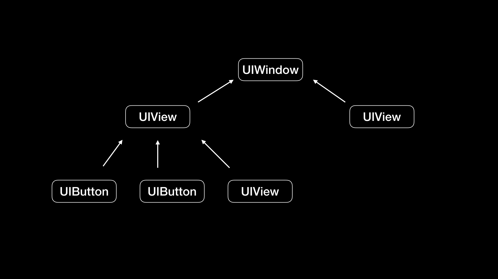

- 00 开篇词 锚定一个点，然后在这个点上深耕.md
- 01 建立你自己的iOS开发知识体系.md
- 02 App 启动速度怎么做优化与监控？.md
- 03 Auto Layout 是怎么进行自动布局的，性能如何？.md
- 04 项目大了人员多了，架构怎么设计更合理？.md
- 05 链接器：符号是怎么绑定到地址上的？.md
- 06 App 如何通过注入动态库的方式实现极速编译调试？.md
- 07 Clang、Infer 和 OCLint ，我们应该使用谁来做静态分析？.md
- 08 如何利用 Clang 为 App 提质？.md
- 09 无侵入的埋点方案如何实现？.md
- 10 包大小：如何从资源和代码层面实现全方位瘦身？.md
- 11 热点问题答疑（一）：基础模块问题答疑.md
- 12 iOS 崩溃千奇百怪，如何全面监控？.md
- 13 如何利用 RunLoop 原理去监控卡顿？.md
- 14 临近 OOM，如何获取详细内存分配信息，分析内存问题？.md
- 15 日志监控：怎样获取 App 中的全量日志？.md
- 16 性能监控：衡量 App 质量的那把尺.md
- 17 远超你想象的多线程的那些坑.md
- 18 怎么减少 App 电量消耗？.md
- 19 热点问题答疑（二）：基础模块问题答疑.md
- 20 iOS开发的最佳学习路径是什么？.md
- 21 除了 Cocoa，iOS还可以用哪些 GUI 框架开发？.md
- 22 细说 iOS 响应式框架变迁，哪些思想可以为我所用？.md
- 23 如何构造酷炫的物理效果和过场动画效果？.md
- 24 A_B 测试：验证决策效果的利器.md
- 25 怎样构建底层的发布和订阅事件总线？.md
- 26 如何提高 JSON 解析的性能？.md
- 27 如何用 Flexbox 思路开发？跟自动布局比，Flexbox 好在哪？.md
- 28 怎么应对各种富文本表现需求？.md
- 29 如何在 iOS 中进行面向测试驱动开发和面向行为驱动开发？.md
- 30 如何制定一套适合自己团队的 iOS 编码规范？.md
- 31 iOS 开发学习资料和书单推荐.md
- 32 热点问题答疑（三）.md
- 33 iOS 系统内核 XNU：App 如何加载？.md
- 34 iOS 黑魔法 Runtime Method Swizzling 背后的原理.md
- 35 libffi：动态调用和定义 C 函数.md
- 36 iOS 是怎么管理内存的？.md
- 37 如何编写 Clang 插件？.md
- 38 热点问题答疑（四）.md
- 39 打通前端与原生的桥梁：JavaScriptCore 能干哪些事情？.md
- 40 React Native、Flutter 等，这些跨端方案怎么选？.md
- 41 原生布局转到前端布局，开发思路有哪些转变？.md
- 42 iOS原生、大前端和Flutter分别是怎么渲染的？.md
- 43 剖析使 App 具有动态化和热更新能力的方案.md
- 用户故事 我是如何学习这个专栏的？.md
- 结束语 慢几步，深几度.md
09 无侵入的埋点方案如何实现？
你好，我是戴铭。
在iOS开发中，埋点可以解决两大类问题：一是了解用户使用App的行为，二是降低分析线上问题的难度。目前，iOS开发中常见的埋点方式，主要包括代码埋点、可视化埋点和无埋点这三种。
代码埋点主要就是通过手写代码的方式来埋点，能很精确的在需要埋点的代码处加上埋点的代码，可以很方便地记录当前环境的变量值，方便调试，并跟踪埋点内容，但存在开发工作量大，并且埋点代码到处都是，后期难以维护等问题。
可视化埋点，就是将埋点增加和修改的工作可视化了，提升了增加和维护埋点的体验。
无埋点，并不是不需要埋点，而更确切地说是“全埋点”，而且埋点代码不会出现在业务代码中，容易管理和维护。它的缺点在于，埋点成本高，后期的解析也比较复杂，再加上view_path的不确定性。所以，这种方案并不能解决所有的埋点需求，但对于大量通用的埋点需求来说，能够节省大量的开发和维护成本。
在这其中，可视化埋点和无埋点，都属于是无侵入的埋点方案，因为它们都不需要在工程代码中写入埋点代码。所以，采用这样的无侵入埋点方案，既可以做到埋点被统一维护，又可以实现和工程代码的解耦。
接下来，我们就通过今天这篇文章，一起来分析一下无侵入埋点方案的实现问题吧。
运行时方法替换方式进行埋点
我们都知道，在iOS开发中最常见的三种埋点，就是对页面进入次数、页面停留时间、点击事件的埋点。对于这三种常见情况，我们都可以通过运行时方法替换技术来插入埋点代码，以实现无侵入的埋点方法。具体的实现方法是：先写一个运行时方法替换的类SMHook，加上替换的方法 hookClass:fromSelector:toSelector，代码如下：
#import "SMHook.h"
#import <objc/runtime.h>
@implementation SMHook
+ (void)hookClass:(Class)classObject fromSelector:(SEL)fromSelector toSelector:(SEL)toSelector {
Class class = classObject;
// 得到被替换类的实例方法
Method fromMethod = class_getInstanceMethod(class, fromSelector);
// 得到替换类的实例方法
Method toMethod = class_getInstanceMethod(class, toSelector);
// class_addMethod 返回成功表示被替换的方法没实现，然后会通过 class_addMethod 方法先实现；返回失败则表示被替换方法已存在，可以直接进行 IMP 指针交换
if(class_addMethod(class, fromSelector, method_getImplementation(toMethod), method_getTypeEncoding(toMethod))) {
// 进行方法的替换
class_replaceMethod(class, toSelector, method_getImplementation(fromMethod), method_getTypeEncoding(fromMethod));
} else {
// 交换 IMP 指针
method_exchangeImplementations(fromMethod, toMethod);
}
}
@end
这个方法利用运行时 method_exchangeImplementations 接口将方法的实现进行了交换，原方法调用时就会被 hook 住，从而去执行指定的方法。
页面进入次数、页面停留时间都需要对 UIViewController 生命周期进行埋点，你可以创建一个 UIViewController 的 Category，代码如下：
@implementation UIViewController (logger)
+ (void)load {
static dispatch_once_t onceToken;
dispatch_once(&onceToken, ^{
// 通过 @selector 获得被替换和替换方法的 SEL，作为 SMHook:hookClass:fromeSelector:toSelector 的参数传入
SEL fromSelectorAppear = @selector(viewWillAppear:);
SEL toSelectorAppear = @selector(hook_viewWillAppear:);
[SMHook hookClass:self fromSelector:fromSelectorAppear toSelector:toSelectorAppear];
SEL fromSelectorDisappear = @selector(viewWillDisappear:);
SEL toSelectorDisappear = @selector(hook_viewWillDisappear:);
[SMHook hookClass:self fromSelector:fromSelectorDisappear toSelector:toSelectorDisappear];
});
}
- (void)hook_viewWillAppear:(BOOL)animated {
// 先执行插入代码，再执行原 viewWillAppear 方法
[self insertToViewWillAppear];
[self hook_viewWillAppear:animated];
}
- (void)hook_viewWillDisappear:(BOOL)animated {
// 执行插入代码，再执行原 viewWillDisappear 方法
[self insertToViewWillDisappear];
[self hook_viewWillDisappear:animated];
}
- (void)insertToViewWillAppear {
// 在 ViewWillAppear 时进行日志的埋点
[[[[SMLogger create]
message:[NSString stringWithFormat:@"%@ Appear",NSStringFromClass([self class])]]
classify:ProjectClassifyOperation]
save];
}
- (void)insertToViewWillDisappear {
// 在 ViewWillDisappear 时进行日志的埋点
[[[[SMLogger create]
message:[NSString stringWithFormat:@"%@ Disappear",NSStringFromClass([self class])]]
classify:ProjectClassifyOperation]
save];
}
@end
可以看到，Category 在 +load() 方法里使用了 SMHook 进行方法替换，在替换的方法里执行需要埋点的方法 [self insertToViewWillAppear]。这样的话，每个 UIViewController 生命周期到了 ViewWillAppear 时都会去执行 insertToViewWillAppear 方法。
那么，我们要怎么区别不同的 UIViewController 呢？我一般采取的做法都是，使用NSStringFromClass([self class]) 方法来取类名。这样，我就能够通过类名来区别不同的UIViewController了。
对于点击事件来说，我们也可以通过运行时方法替换的方式进行无侵入埋点。这里最主要的工作是，找到这个点击事件的方法 sendAction:to:forEvent:，然后在 +load() 方法使用 SMHook 替换成为你定义的方法。完整代码实现如下：
+ (void)load {
static dispatch_once_t onceToken;
dispatch_once(&onceToken, ^{
// 通过 @selector 获得被替换和替换方法的 SEL，作为 SMHook:hookClass:fromeSelector:toSelector 的参数传入
SEL fromSelector = @selector(sendAction:to:forEvent:);
SEL toSelector = @selector(hook_sendAction:to:forEvent:);
[SMHook hookClass:self fromSelector:fromSelector toSelector:toSelector];
});
}
- (void)hook_sendAction:(SEL)action to:(id)target forEvent:(UIEvent *)event {
[self insertToSendAction:action to:target forEvent:event];
[self hook_sendAction:action to:target forEvent:event];
}
- (void)insertToSendAction:(SEL)action to:(id)target forEvent:(UIEvent *)event {
// 日志记录
if ([[[event allTouches] anyObject] phase] == UITouchPhaseEnded) {
NSString *actionString = NSStringFromSelector(action);
NSString *targetName = NSStringFromClass([target class]);
[[[SMLogger create] message:[NSString stringWithFormat:@"%@ %@",targetName,actionString]] save];
}
}
和 UIViewController 生命周期埋点不同的是，UIButton 在一个视图类中可能有多个不同的继承类，相同 UIButton 的子类在不同视图类的埋点也要区别开。所以，我们需要通过 “action 选择器名 NSStringFromSelector(action)” +“视图类名 NSStringFromClass([target class])”组合成一个唯一的标识，来进行埋点记录。
除了UIViewController、UIButton控件以外，Cocoa 框架的其他控件都可以使用这种方法来进行无侵入埋点。以 Cocoa 框架中最复杂的 UITableView 控件为例，你可以使用hook setDelegate 方法来实现无侵入埋点。另外，对于Cocoa 框架中的手势事件（Gesture Event），我们也可以通过hook initWithTarget:action: 方法来实现无侵入埋点。
事件唯一标识
通过运行时方法替换的方式，我们能够 hook 住所有的 Objective-C 方法，可以说是大而全了，能够帮助我们解决绝大部分的埋点问题。
但是，这种方案的精确度还不够高，还无法区分相同类在不同视图树节点的情况。比如，一个视图下相同 UIButton 的不同实例，仅仅通过 “action 选择器名”+“视图类名”的组合还不能够区分开。这时，我们就需要有一个唯一标识来区分不同的事件。接下来，我就跟你说说如何制定出这个唯一标识。
这时，我首先想到的就是，能不能通过视图层级的路径来解决这个问题。因为每个页面都有一个视图树结构，通过视图的 superview 和 subviews 的属性，我们就能够还原出每个页面的视图树。视图树的顶层是 UIWindow，每个视图都在树的子节点上。如下图所示：

- 一个视图下的子节点可能是同一个视图的不同实例，比如上图中 UIView 视图节点下的两个 UIButton 是同一个类的不同实例，所以光靠视图树的路径还是没法唯一确定出视图的标识。那么，这种情况下，我们又应该如何区别不同的视图呢？这时，我们想到了索引：每个子视图在父视图中都会有自己的索引，所以如果我们再加上这个索引的话，每个视图的标识就是唯一的了。
接下来的一个问题是，视图层级路径加上在父视图中的索引来进行唯一标识，是不是就能够涵盖所有情况了呢？
当然不是。我们还需要考虑类似 UITableViewCell 这种具有可复用机制的视图，Cell 会在页面滚动时不断复用，所以加索引的方式还是没法用。
但这个问题也并不是无解的。UITableViewCell 需要使用 indexPath，这个值里包含了 section 和 row 的值。所以，我们可以通过 indexPath 来确定每个 Cell 的唯一性。
除了 UITableViewCell 这种情况之外， UIAlertController也比较特殊。它的特殊性在于视图层级的不固定，因为它可能出现在任何页面中。但是，我们都知道它的功能区分往往通过弹窗内容来决定，所以可以通过内容来确定它的唯一标识。
除此之外，还有更多需要特殊处理的情况，但我们总是可以通过一些办法去确定它们的唯一性，所以我在这里也就不再一一列举了。思路上来说就是，想办法找出元素间不相同的因素然后进行组合，最后形成一个能够区别于其他元素的标识来。
除了上面提到的这些特殊情况外，还有一种情况使得我们也难以得到准确的唯一标识。如果视图层级在运行时会被更改，比如执行 insertSubView:atIndex:、removeFromSuperView 等方法时，我们也无法得到唯一标识，即使只截取部分路径也无法保证后期代码更新时不会动到这个部分。就算是运行时视图层级不会修改，以后需求迭代页面更新频繁的话，视图唯一标识也需要同步的更新维护。
这种问题就不好解决了，事件唯一标识的准确性难以保障，这也是通过运行时方法替换进行无侵入埋点很难在各个公司全面铺开的原因。虽然无侵入埋点无法覆盖到所有情况，全面铺开面临挑战，但是无侵入埋点还是解决了大部分的埋点需求，也节省了大量的人力成本。
小结
今天这篇文章，我与你分享了运行时替换方法进行无侵入埋点的方案。这套方案由于唯一标识难以维护和准确性难以保障的原因，很难被全面采用，一般都只是用于一些功能和视图稳定的地方，手动侵入式埋点方式依然占据大部分场景。
无侵入埋点也是业界一大难题，目前还只是初级阶段，还有很长的路要走。我认为，运行时替换方法的方式也只是一种尝试，但是现实中业务代码太过复杂。同时，为了使无侵入的埋点能够覆盖得更全、准确度更高，代价往往是对埋点所需的标识维护成本不断增大。
所以说，我觉得这种方案并不一定是未来的方向。我倒是觉得使用 Clang AST 的接口，在构建时遍历 AST，通过定义的规则将所需要的埋点代码直接加进去，可能会更加合适。这时，我们可以使用前一篇文章“如何利用 Clang 为 App 提质？”中提到的 LibTooling 来开发一个独立的工具，专门以静态方式插入埋点代码。这样做，既可以享受到手动埋点的精确性，还能够享受到无侵入埋点方式的统一维护、开发解耦、易维护的优势。
课后作业
今天我和你具体说了下 UIViewController 生命周期和 UIButton 点击事件的无侵入埋点方式，并给了具体的实现代码。那么，对于 UITableViewCell 点击事件的无侵入埋点，应该怎么来实现的代码，就当做一个课后小作业留给你来完成吧。
感谢你的收听，欢迎你在评论区给我留言分享你的观点，也欢迎把它分享给更多的朋友一起阅读。
© 2019 - 2023 Liangliang Lee. Powered by gin and hexo-theme-book.